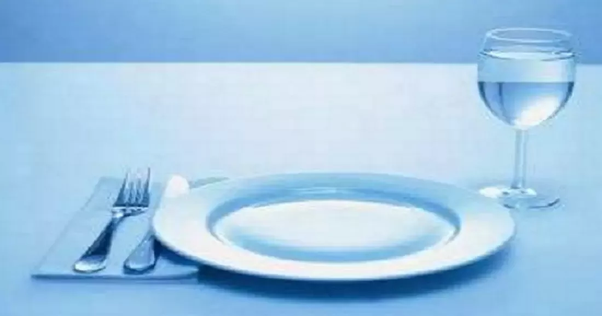

Je jeûne tous les mardis depuis quelques mois. Je ne mange rien du lundi soir au mercredi matin. Je bois juste de l’eau et du thé (sans sucre, ni lait, ni miel).

Voici le résumé de mon premier mardi :
-Mardi matin, je me réveille vers 7 h 30 comme d’habitude, j'ai la pêche ! Je suis ravi de ce nouveau défi. Je suis ma routine matinale : du sport pendant environ 25 minutes. Pas de difficulté. Je pars travailler vers 8 h 30 (10 minutes de trajet en vélo). La matinée est très productive, tout va bien.
-À midi, mes collègues partent manger. C’est un peu délicat de leur expliquer qu’aujourd’hui, je ne vais pas manger avec eux. Non, non, ce n’est pas par conviction religieuse, oui, oui, je vous assure, j’aime manger, et j’aime manger avec vous, c’est juste par curiosité ! Ils reviennent une heure plus tard, je suis ravi de célébrer mon deuxième succès : pas de petit déjeuner, ni de repas.
-Vers 14 h 30, mon ventre commence à gargouiller, je vais uriner toutes les heures à cause de l'eau et du thé que je bois. J’ai faim.
-Vers 15 h 30, j’ai faim. Je suis trop rapide. J’enchaine les croix sur ma to-do list. Dès que je me retrouve sans tâche, je pense à une purée ou des frites, un avocat ou une tartine de beurre de cacahuette. Vite, quelque chose à faire, me concentrer, ne pas penser à manger.
-Vers 16 h 30, le ressenti est un peu difficile à expliquer. En gros, je me sens un peu faible de corps, mais super fort mentalement (surtout au niveau de mes convictions). C’est plutôt agréable, mais j’ai faim.
-Vers 18 h 30, je pars pour mon cours d'allemand (10 minutes de vélo). Les sensations de faiblesse de corps et de force de conviction s'intensifient. Si je me lève trop vite, je me sens un peu étourdi mais ça passe vite.
-Je rentre chez moi vers 21 h 30 (20 minutes de vélo). Je regarde un film, lis un peu et éteins la lumière. J'ai un peu faim mais curieusement, ça va. Je galère un peu pour m'endormir mais finalement, ce n’est pas plus tard que d’habitude que le sommeil me gagne.
-Mercredi matin, je me réveille vers 7 h. J’ai rêvé de corn flakes. Je me rendors une heure de plus.
-Vers 8 h, je me lève, je fais mes 30 minutes de sport. Je n’ai pas très faim, j’ai l’impression que je pourrais jeûner un jour de plus. J’ai lu sur plusieurs blogs qu'il faut manger en petite quantité pour "sortir" de la période de jeûne alors je mange un morceau de pain, un fruit et bois un verre de lait de soja. Tout est savoureux ! Même le pain, que je trempe tel quel dans le lait, sans chocolat ni confiture, est délicieux ! Je mange lentement et apprécie chaque bouchée, espérons que ça dure (je suis du genre à manger trop vite).
-Bilan au mercredi soir : je me sens très bien, je suis fier d'avoir tenu le coup. Mon repas du mercredi midi est dans les proportions habituelles. Je n’ai pas envie de manger plus que d’habitude, ça me faisait un peu peur.
-Bilan au jour d’aujourd’hui : Maintenant que je commence à avoir plus d’expérience, j’ai des stratégies plus efficaces pour lutter contre la faim. Mon corps (notamment mon estomac) s’est également habitué et je n’ai presque plus du tout de sensation d’étourdissement. Malgré tout, jeûner reste un challenge difficile.
Ah, et chaque mardi, je perds presque deux kilos…. Que je regagne dès le vendredi !
Edit: Pourquoi je jeûne?
Pour ma part, il s’agit surtout de controler mon comportement: jeûner m’aide à développer des stratégies pour résister à l’appel de la nourriture malsaine (gateaux, frites, etc..). J’apprends à me contrôler et résister. En gros, jeûner pour moi, c’est gagner en discipline personnelle.
En effet secondaire, jeûner m’a appris que manger 3 fois par jour, ce n’est absolument pas vital. Je peux même faire la même quantité de sport que d’habitude après 24h sans manger. Je sais maintenant que les quantités de nourriture que j’ingurgite sont disproportionnées par rapport aux besoins réels. J’apprécie beaucoup plus chaque bouchée et je mange plus lentement. Avoir faim aide à relativiser sur les autres problèmes de la vie quotidienne et prendre (beaucoup) de recul. Chaque mardi est un challenge et j’aime la compétition avec moi-même.
+ selon certaines études, il y aurait d’autres effets bénéfiques notamment sur la santé (Jeûne).